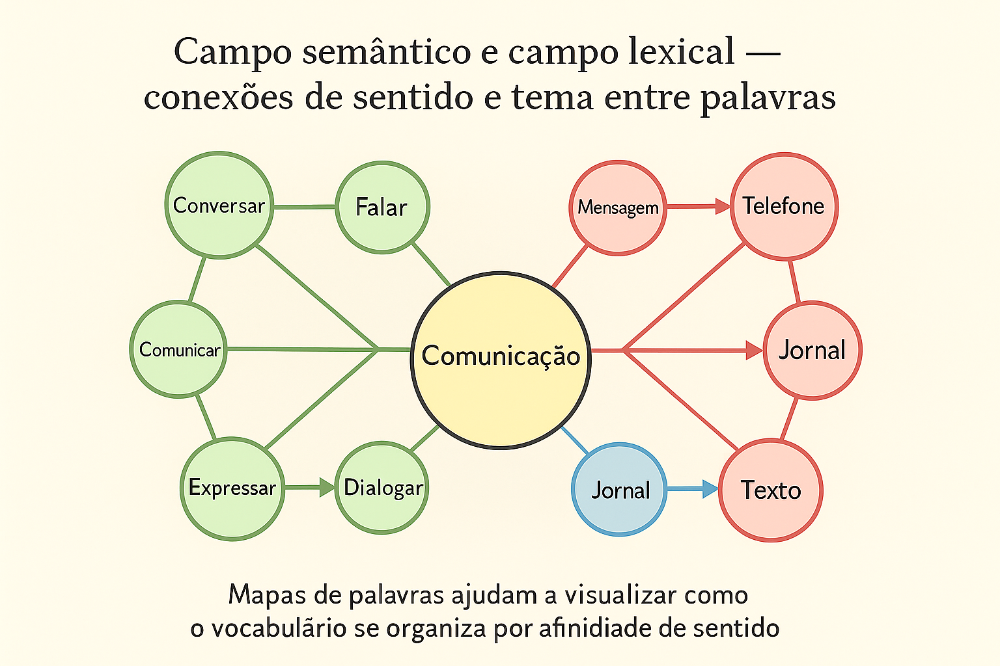

Campo Semântico e Campo Lexical: Estruturação do Vocabulário, Redes Conceituais e Coesão
O vocabulário de uma língua não se comporta como um amontoado caótico de palavras dispersas em um depósito inerte. Pelo contrário: as palavras organizam-se em complexos sistemas conceituais que refletem o modo como uma comunidade linguística percebe, classifica, hierarquiza e interpreta a experiência humana e a realidade material. No âmbito da Semântica Estrutural e da Lexicologia, essa arquitetura fundamenta-se em duas noções complementares e decisivas: o campo semântico e o campo lexical.
Desenvolvida inicialmente pelo linguista alemão Jost Trier na década de 1930 e aprofundada por autores como Eugenio Coseriu (1977) e John Lyons (1977), a Teoria dos Campos Semânticos demonstrou que o significado de uma palavra não existe isoladamente; ele é delimitado pela vizinhança de outros termos que disputam o mesmo espaço conceitual, como as peças ajustadas de um mosaico intelectual.
Compreender a distinção entre a afinidade de sentido (campo semântico) e o pertencimento a um mesmo universo temático (campo lexical) é uma ferramenta indispensável para o letramento avançado. Esse domínio potencializa a precisão vocabular, evita redundâncias estéreis e constitui a espinha dorsal da coesão lexical anafórica e da coerência temática em dissertações de alto rendimento, como a Redação do ENEM e dos vestibulares tradicionais.

A arquitetura dos campos: delimitação conceitual
Embora sejam termos frequentemente confundidos na prática escolar leiga, o campo semântico e o campo lexical operam a partir de princípios organizadores distintos:
Campo Semântico (Afinidade de Significado)
Reúne palavras e expressões que compartilham um mesmo núcleo de traços sêmicos (significados próximos, gradações ou variações de uma mesma matriz conceitual).
Critério: Sinonímia, antonímia, hiponímia e gradação de intensidade em torno de uma ideia nuclear.
Exemplo (Afetividade / Satisfação): Alegre, contente, feliz, radiante, eufórico, satisfeito.
Exemplo (Dimensão / Tamanho): Minúsculo, pequeno, médio, grande, enorme, gigantesco.
Campo Lexical (Universo Temático / Frame Cognitivo)
Agrupa palavras de diferentes classes gramaticais que convergem para um mesmo tema, esfera de atividade humana ou área do conhecimento.
Critério: Contiguidade de mundo, associação de ideias e compartilhamento de um mesmo enquadramento sociocultural (cenário).
Exemplo (Universo da Escola): Professor, aluno, lecionar, caderno, avaliação, pedagógico, recreio, lousa.
Exemplo (Universo do Hospital): Médico, enfermaria, bisturi, diagnosticar, leito, curativo, urgência.
A metáfora do mosaico de Jost Trier
Jost Trier (1931) formulou que as palavras de um campo semântico cobrem uma determinada área da experiência humana como as pedras de um mosaico cobrem uma parede. Se uma palavra altera seu significado histórico ou cai em desuso, as palavras vizinhas expandem seus contornos semânticos para cobrir a lacuna deixada. O valor de cada palavra decorre das fronteiras que ela estabelece com os termos limítrofes.
Não confunda: Campo Lexical versus Família de Palavras (Cognatos)
Um erro metodológico comum é confundir campo lexical com família etimológica de palavras. Uma família de palavras agrupa termos que derivam do mesmo radical morfológico (ex.: terra, terreiro, desterrado, terrestre, enterrar). Já o campo lexical da agricultura pode conter terra, mas também abrange vocábulos morfologicamente independentes como enxada, trator, semente, adubo, safra e irrigação. O campo lexical guia-se pelo tema, não pelo radical da palavra.
Mapeamento de campos nos diversos domínios da experiência
A tabela abaixo sintetiza como a língua articula o campo semântico (equivalência e gradação) e o campo lexical (universo enciclopédico de referência) em diferentes esferas:
| Domínio Temático | Exemplo de Campo Semântico (Variação de Sentido) | Exemplo de Campo Lexical (Rede Temática) | Relações Léxicas Mobilizadas |
|---|---|---|---|
| Saúde e Medicina | Doente, enfermo, indisposto, debilitado, combalido. | Hospital, médico, bisturi, curar, cirurgia, leito, prescrição. | Sinonímia graduada e coesão associativa por contiguidade temática. |
| Futebol e Esporte | Vencer, derrotar, superar, golear, bater. | Gramado, árbitro, apito, chuteira, pênalti, torcida, arquibancada. | Relações de hierarquia de intensidade versus repertório de cenário. |
| Tecnologia Digital | Rápido, veloz, ágil, instantâneo, vertiginoso. | Algoritmo, servidor, download, navegar, nuvem, roteador, usuário. | Matiz escalar de velocidade versus vocabulário especializado de informática. |
| Habitação e Moradia | Casa, lar, residência, morada, domicílio, teto. | Tijolo, argamassa, telhado, arquiteto, sala, aluguel, mobilhar. | Sinonímia com variações de registro (jurídico, afetivo) versus componentes materiais. |
Campos lexicais e semânticos na Redação do ENEM e na coesão textual
A mobilização estratégica desses dois conceitos é um dos fatores determinantes para a obtenção de nota máxima na Competência 3 (seleção, relação e organização de informações) e na Competência 4 (coesão textual) da Redação do ENEM:
- Manutenção do Fio Condutor Temático: A semeadura consciente de palavras do mesmo campo lexical ao longo dos parágrafos impede que o candidato tangencie o tema proposto pela banca avaliadora;
- Diversificação Vocabular por Campo Semântico: Alternar palavras de um mesmo campo de sentido (ex.: em vez de repetir problema, utilizar revés, imbróglio, adversidade, óbice ou percalço) demonstra domínio da norma culta e riqueza lexical;
- Encadeamento por Hiponímia e Hiperonímia: Iniciar com termos amplos e especificá-los adiante com termos subordinados dentro do mesmo campo consolida a progressão tópica do texto dissertativo.
Exemplo prático de análise: a coerência lexical em um parágrafo dissertativo
Parágrafo Dissertativo em Análise (Tema: Insegurança Alimentar)
"Historicamente, a escassez nutricional que assola os rincões do país não decorre da ausência de safras agrícolas, mas da perversa concentração de renda. Enquanto o agronegócio celebra recordes de exportação de grãos e commodities, milhões de famílias convivem com a privação calórica diária, revelando que a fome no Brasil é fruto da iniquidade distributiva e da negligência governamental."
Roteiro de Identificação das Redes Semânticas e Lexicais
- Campo Lexical do Agronegócio / Produção: safras, agrícola, agronegócio, exportação, grãos, commodities. Cria o universo econômico de abundância técnica.
- Campo Lexical da Vulnerabilidade Social: renda, famílias, iniquidade, distributiva, negligência. Constrói o universo sociopolítico de denúncia.
- Campo Semântico da Carência Material: escassez, privação, fome. São vocábulos que compartilham o núcleo de sentido da falta vital de alimentos, variando em intensidade e registro para evitar repetição.
Atividade pedagógica: mapeamento de redes em sala de aula
Roteiro de Aplicação: O Mapa Léxico-Semântico
Para fixar a distinção entre os conceitos de forma ativa e colaborativa no Ensino Fundamental II ou Médio:
- Definição do Nó Central: O professor escolhe um tema transversal relevante (ex.: Meio Ambiente ou Inteligência Artificial);
- Fase 1 - Ativação do Campo Lexical (Mundo Temático): Os estudantes listam em post-its azuis todos os agentes, instrumentos, ações e cenários que esse tema convoca (ex.: para Meio Ambiente: floresta, desmatar, bioma, fiscalização, fauna, poluente);
- Fase 2 - Refinamento por Campo Semântico (Nuances de Sentido): Os alunos escolhem uma palavra-chave do mapa (como destruir) e agrupam em post-its amarelos suas variações de sentido e intensidade: danificar, devastar, aniquilar, degradar, arrasar;
- Fase 3 - Aplicação Textual: Cada grupo redige um parágrafo argumentativo utilizando harmoniosamente os termos mapeados, exercitando a coesão semântica sem redundâncias.
Esquema pedagógico: o mapa mental do léxico
A dupla engrenagem de estruturação das palavras
Tema Central / Referente de Mundo → Campo Lexical (constelação de substantivos, verbos e adjetivos de um mesmo cenário) → Campos Semânticos Internos (núcleos de proximidade de sentido, sinônimos e antônimos) → Seleção Textual Adequada (ajuste de registro, tom e intenção argumentativa) → Coesão e Coerência Plenas (texto fluído, preciso e livre de repetições).
Questões para estudo e reflexão
Questão 1
Qual é a diferença conceitual fundamental entre campo semântico e campo lexical?
Ver resposta comentada
Resposta comentada: O campo semântico é organizado por afinidade e proximidade de significado entre as palavras (sinonímia, gradação de intensidade, antonímia), orbitando em torno de um núcleo de sentido compartilhado (ex.: feliz, radiante, alegre). O campo lexical organiza-se pelo pertencimento a um mesmo tema, cenário ou domínio do conhecimento humano, reunindo palavras de diferentes naturezas gramaticais associadas àquele universo (ex.: escola, professor, lousa, lecionar, prova).
Questão 2
Por que uma família de palavras cognatas não deve ser confundida com um campo lexical?
Ver resposta comentada
Resposta comentada: Porque a família de palavras baseia-se em um critério estritamente morfológico e etimológico: o compartilhamento do mesmo radical primitivo (ex.: pedra, pedreiro, pedregulho, apedrejar). O campo lexical baseia-se em um critério temático e conceitual de mundo, podendo agrupar vocábulos com origens e radicais completamente diversos que convergem para a mesma esfera prática (ex.: o campo da construção civil reúne tijolo, cimento, arquiteto, fundação e viga).
Questão 3
De que maneira a Teoria dos Campos de Jost Trier explica a interdependência entre os significados das palavras de uma língua?
Ver resposta comentada
Resposta comentada: Trier formulou que as palavras cobrem os domínios conceituais como pedras de um mosaico. Isso significa que o sentido de um termo não é autônomo nem absoluto, mas definido negativamente pelos limites impostos pelos termos vizinhos. Se um novo vocábulo entra no sistema ou se um termo antigo muda de significado, todo o equilíbrio interno daquele campo conceitual é redistribuído.
Questão 4
Como a mobilização consciente do campo lexical contribui para garantir a nota máxima na Competência 4 da Redação do ENEM?
Ver resposta comentada
Resposta comentada: O uso consistente de um campo lexical temático assegura a coesão associativa ao longo de todo o texto, tecendo uma rede contínua de vocábulos que referenciam o problema sem repetições exaustivas das palavras do tema da proposta. Isso demonstra amplitude de vocabulário, precisão de encadeamento e sofisticação no uso dos recursos coesivos da língua.
Questão 5
Identifique o campo semântico e o campo lexical predominantes no seguinte conjunto: {bisturi, anestesista, suturar, leito, enfermaria} e {debilitado, enfermo, convalescente, combalido}.
Ver resposta comentada
Resposta comentada: O primeiro conjunto ({bisturi, anestesista, suturar, leito, enfermaria}) constitui um campo lexical temático voltado ao universo do hospital e da cirurgia. O segundo conjunto ({debilitado, enfermo, convalescente, combalido}) constitui um campo semântico, pois todas as palavras compartilham o núcleo de sentido de fragilidade física e enfermidade de saúde, expressando matizes de proximidade semântica.
Resumo sobre campo semântico e campo lexical
- O léxico da língua organiza-se em redes integradas de sentido e conhecimento de mundo;
- O campo semântico agrupa palavras que compartilham um mesmo núcleo de significado básico (sinonímia, gradação de intensidade);
- O campo lexical reúne palavras de várias classes gramaticais pertencentes a um mesmo tema ou universo de atuação social;
- O campo lexical não se confunde com a família morfológica de palavras cognatas (que compartilham o radical);
- Jost Trier comparou os campos semânticos a um mosaico conceitual cujas fronteiras se delimitam reciprocamente;
- O domínio dessas redes é fundamental para enriquecer o repertório vocabular e sustentar a coesão referencial na redação;
- A prática de criação de mapas conceituais e redes de palavras favorece a leitura crítica e a escrita dissertativa autônoma.
Perguntas frequentes sobre campos conceituais
O que é campo semântico?
É o conjunto de palavras que compartilham uma mesma área de significado ou núcleo conceitual, diferenciando-se entre si apenas por nuances de sentido, intensidade, afeto ou nível de formalidade (ex.: triste, chateado, melancólico, deprimido).
O que é campo lexical?
É o conjunto de palavras de diferentes tipos (substantivos, verbos, adjetivos) que se associam em torno de um mesmo tema de mundo ou atividade humana (ex.: para viagem: passaporte, mala, embarcar, hotel, turista).
Qual a diferença básica entre campo semântico e campo lexical?
O campo semântico baseia-se na semelhança de significado entre as palavras. O campo lexical baseia-se na associação temática ao redor de um mesmo assunto.
Uma mesma palavra pode pertencer a mais de um campo?
Sim. Em razão da polissemia, palavras como rede podem pertencer ao campo lexical da pesca, da informática (rede de computadores), do descanso doméstico (rede de dormir) ou dos transportes viários.
Como o campo lexical ajuda a evitar a fuga ao tema na redação?
Ao utilizar palavras do campo lexical diretamente associadas à proposta da redação em todos os parágrafos, o candidato amarra seu texto ao assunto central, demonstrando foco contínuo e evitando o tangenciamento temático.
O que é um frame cognitivo na semântica?
É uma estrutura mental de conhecimento que organiza a experiência humana: ao acionar a palavra restaurante, nosso cérebro ativa automaticamente o frame com garçom, cardápio, conta, mesa e refeição.
Palavras antônimas fazem parte do mesmo campo semântico?
Sim. Pares antônimos como quente e frio pertencem ao mesmo campo semântico da temperatura, pois compartilham a mesma dimensão dimensional básica, ocupando extremos opostos da escala.
Quem criou a teoria dos campos semânticos?
A teoria foi inaugurada pelo linguista alemão Jost Trier em 1931, em seu estudo sobre o vocabulário intelectual na língua alemã medieval, sendo posteriormente expandida pela linguística estrutural europeia.
Considerações finais
A compreensão sistemática dos campos semântico e lexical revela a dimensão viva e orgânica do idioma. As palavras não existem como entidades solitárias confinadas às páginas de um dicionário; elas dialogam ininterruptamente, atraindo-se mutuamente pela afinidade de seus sentidos e pela contiguidade das práticas sociais em que são forjadas.
Ao tomar consciência dessas teias léxico-semânticas, o estudante e o produtor de textos ganham liberdade estilística e precisão analítica. Abre-se a possibilidade de escolher não apenas a palavra que "funciona", mas o vocábulo exato que confere força expressiva, rigor conceitual e elegância coesiva à construção do pensamento.
Conteúdos relacionados
- Noções Iniciais de Semântica: o Significado nas Palavras
- Relações Semânticas no Léxico: Conexões de Sentido e Coesão
- Denotação e Conotação: Sentidos Literal e Figurado na Linguagem
- Sentido Literal e Sentido Figurado: Mecanismos e Expressividade
- Ambiguidade e Inferência Semântica no Contexto Textual
- Semântica e Pragmática: Significado e Uso da Linguagem
- Semântica — Índice Completo de Conteúdos
Referências
- COSERIU, Eugenio. Principios de semántica estructural. Madrid: Gredos, 1977.
- FERRAREZI JÚNIOR, Celso. Semântica para a educação básica. São Paulo: Parábola Editorial, 2008.
- GARCIA, Othon Moacyr. Comunicação em prosa moderna: aprenda a escrever, aprendendo a pensar. 27. ed. Rio de Janeiro: Editora FGV, 2010.
- ILARI, Rodolfo; GERALDI, João Wanderley. Semântica. 11. ed. São Paulo: Ática, 2006.
- LYONS, John. Semantics. Cambridge: Cambridge University Press, 1977. v. 1 e 2.
- TRIER, Jost. Der deutsche Wortschatz im Sinnbezirk des Verstandes: die Geschichte eines sprachlichen Feldes. Heidelberg: Winter, 1931.
- ULLMANN, Stephen. Semântica: uma introdução à ciência do significado. 5. ed. Lisboa: Fundação Calouste Gulbenkian, 1982.
Explore Outros Conteúdos
Continue seus estudos acessando outras seções do site Mestre Kira: